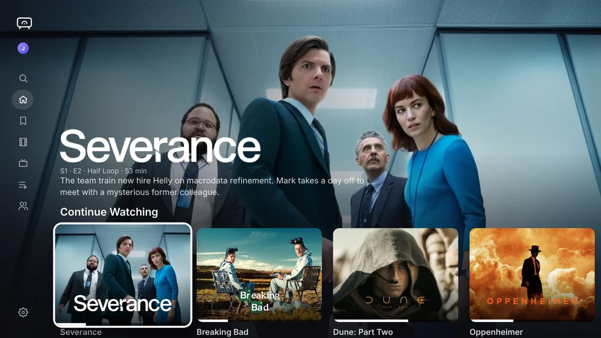
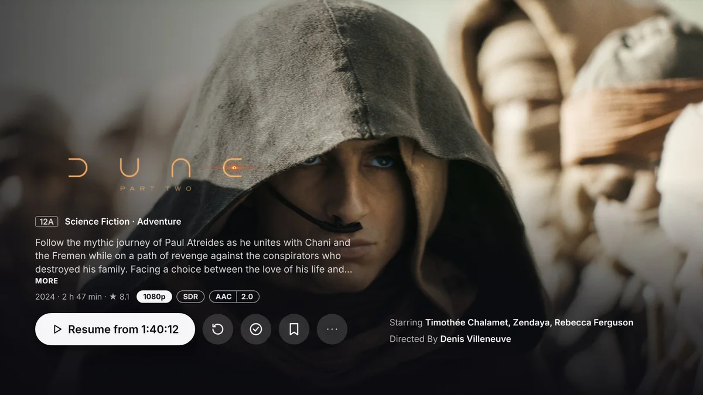
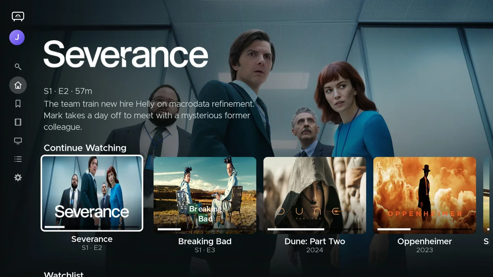
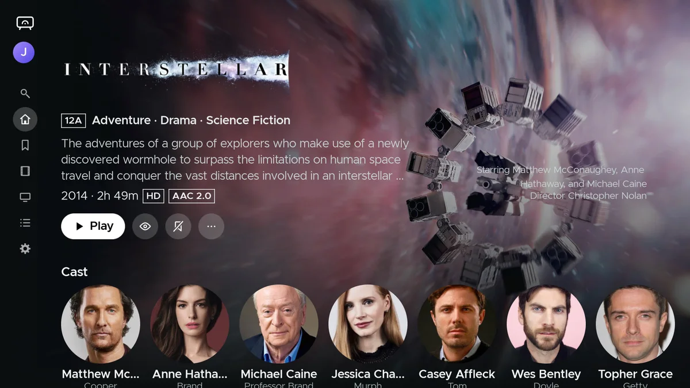
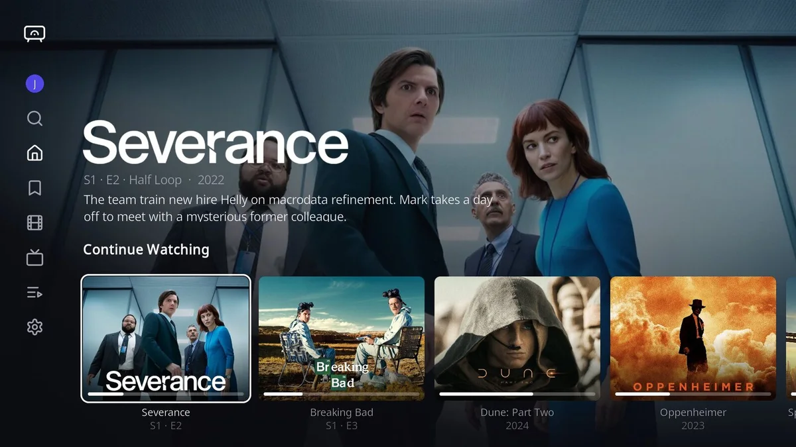
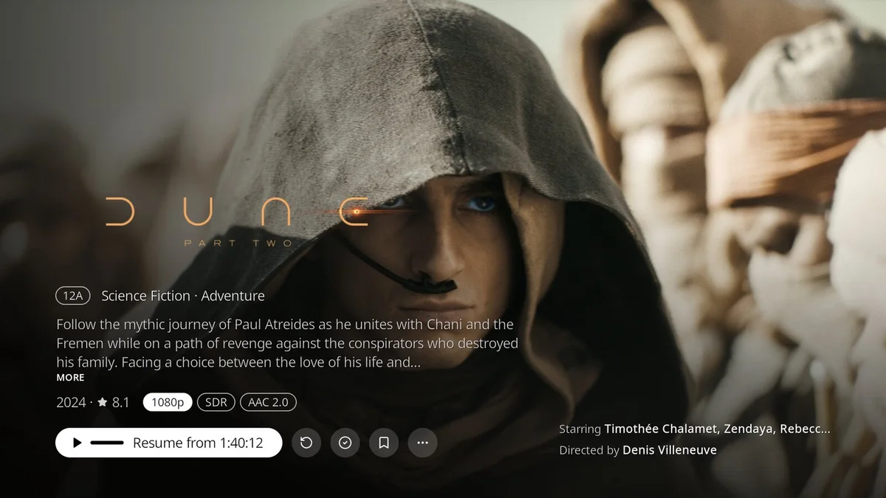

Arc apps
Choose your screen and see what Arc looks like on it. The apps are in alpha and connect to an Arc server you can reach.
Apple TV
Apple TV HD and 4K · tvOS 18+
Build with Xcode on a Mac.
Android TV & Google TV
Android 8.0+
Download the alpha APK and sideload it on your TV.


LG & Samsung TVs
LG webOS 4.5+ · Samsung Tizen 5.5+
Use the webOS or Tizen developer installation steps for your TV.




Roku
Roku players and Roku TVs
Sideload the app in developer mode.




Kodi
Kodi 19+
Install the Arc add-on and connect it to your server.




Project screenshots include simulator and development captures. Rendering and feature availability can vary by device.